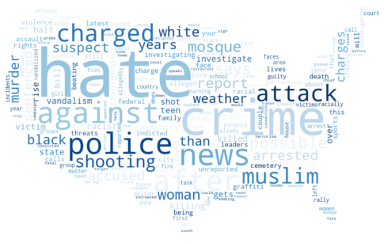
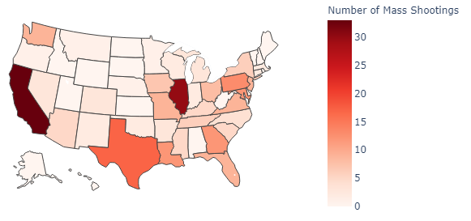
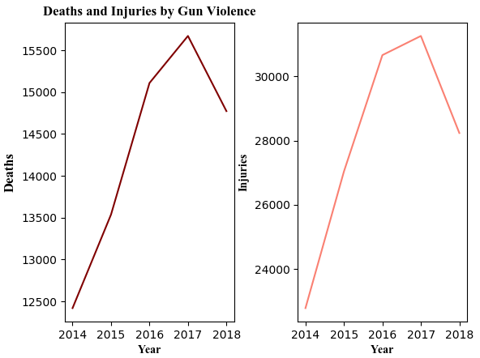

Before studying the recent rise in hate crimes and gun violence, it’s important to look at what motivates humans to commit these crimes in the first place. Criminals are generally classified into four types: a normal person driven to crime by irresistible impulses, a neurotic person driven by similar impulses without knowledge of the morality of his actions, the genuine criminal who has grown anti-social and prides in his illicit efforts, and finally those who have a mental deficiency or organic illness. Sigmund Freud proposed that criminals have an overdeveloped superego, which leads them to commit a crime and receive punishment in order to relieve themselves of a guilt they cannot rid themselves of otherwise.
A recent theory proposed by neuroscientist Daniel Eagleman has shown that the brain is made of many opposing “teams,” the two major ones emotion and reason. It’s difficult to fully understand these individuals and predict whether they will go on to commit these crimes again. The blurred line stretches further when considering whether to send the person into rehab, sentence them to prison, or condemn them to death. Why is this so crucial? Given how prevalent the news and media has become in our daily lives, it is all the more important that journalists consider the whole story and think of the long term impacts that it can place on the community as a whole.
Hate Crimes
noun; “a crime, typically one involving violence, that is motivated by prejudice on the basis of race, religion, sexual orientation, or other grounds.”
The term “hate crime” was coined in the 1980s to address the series of violent incidents against African Americans and Asians occuring in the U.S. at the time. Violence against minorities is far from gone, however. Today we see prejudices manifest in physical altercations and criminal actions more and more frequently in the news.
“[Media] has not only become a fertile soil for the spread of hateful ideas but also motivates real-life action.”
-KARSTEN MÜLLER
In a world documented by headlines and cameras every second, there is nothing to cover the divisive narrative in America of how rampant racism and bias run.

×
This word cloud was generated from over 2000 headlines of articles related to hate crimes. Looking at this visual representation, it is easy to see the most common hateful agendas of attackers. Words such as “black,” “muslim,” and “mosque,” spotlight the prejudice and bigotry. In this way, the media’s coverage of such events is barely short of encouraging and instead furthers the hate.
The public has become easily swayed by the news and television. John F. Kennedy was able to efficiently utilize the rising popularity of televised press to connect directly to voters and win their approval. Today, media outlets do the same to serve their own social and political agendas.
This presents two problems. Firstly, being constantly bombarded with pessimistic and macabre news stories does not inspire action, only fear. Despite a dramatic 20 year decline in the crime rate of the U.S., most Americans still perceive a rising crime problem in their country. Public views on violent crime and who commits these crimes is highly influenced by local news. When added to the factor that everyone now has instant access to news and social media outlets on their phones, we seem to have become surrounded by violence and hate.
Secondly, it also normalizes the hatred. It is critical to remember that ideas of supremacy and bigotry are not new. America’s history is stained with violence in the name of nationalism. But with the rise of the prevalence of the media in our lives, we are giving power to the hatred spreading across our country. Those who commit hate crimes seek to spread a message, and when media outlets choose to publish the article that will inflame the most controversy and garner the most attention, they are only perpetuating that message of hate.
Gun Violence
Increasing levels of gun violence have become an epidemic in the United States. Every year, approximately 100,000 Americans are victims of gun violence. Although these numbers may seem difficult to visualize, gun violence impacts every aspect of our society, from incidents of domestic violence and suicides to mass shootings.
There is no widely accepted definition of a mass shooting. More restrictive definitions used in the past by the Federal Bureau of Investigation (FBI) argue that at least 4 people must have been killed. However, broader definitions, such as that of the Gun Violence Archive, deem that a mass shooting is where at least 4 victims are injured or killed in one location. Although the definition of a mass shooting may be fluid, it does not detract from the fact that mass shootings have been on the rise since 2013.
In 2018 alone, over 40,000 incidents of gun violence occurred; of these, 340 were mass shootings. As of August 5th, 2019, there have been 255 mass shootings in the United States. This puts 2019 as the first year since 2016 with an average of more than one mass shooting per day.
1 / 2

As of August, California had 32 mass shootings and Illinois had 30 in 2019 alone. Data for map provided by the Gun Violence Archive.
2 / 3

From 2014 to 2018, on average, there has been a 21.5% increase in the number of deaths and injuries as a result of gun violence. Data for graphs provided by the Gun Violence Archive.
The number of mass shootings has been on the rise. Schools, stores, restaurants, churches, and even playgrounds have been increasingly targeted. On July 28th, 2019, a gunman at the Gilroy Garlic Festival near San Francisco killed a 6-year-old boy, a 13-year-old girl, and a man in his 20s, and then proceeded to injure a dozen more citizens. On August 3rd, 2019, in a Walmart in El Paso, Texas, a “lone gunman allegedly seeking to murder Hispanic people” killed 22 citizens and injured over two dozen others. Among the victims were two young parents, Jordan and Andre Anchondo. They had gone to Walmart with their two-month-old son after dropping their daughter at cheer practice. Only their son survived. Fourteen hours later, in Dayton, Ohio, a mass shooter killed 9 people and injured 27 in only 32 seconds. His sister was among the first victims killed. These instances are not anomalies; the number of heartbreaking stories may only increase in the coming months.
One mass shooting may indeed inspire another. According to The New York Times, forensic psychologists say that “many would-be mass killers see themselves as a part of a brotherhood of like-minded, isolated boys and men. To them, previous mass murderers may be perceived as idols and pioneers.” Recent incidents of mass violence portrayed in the news may provide inspiration for more violence to occur. A 2015 study of school shootings in the United States came to a similar conclusion: acts of violence tended to follow similar ones within a span of two weeks.
Therefore, it is increasingly important to monitor the way in which mass shootings should be reported in the media. A paper written on the topic hypothesizes that “the media coverage that mass shootings receive could systematically encourage future perpetrators.” Moreover, the detailed media coverage of these violent acts may actually give vulnerable people “ideas about what to do and how to do it,” concluded Madelyn Gould, a professor of epidemiology and psychiatry at Columbia. The prominence, details, and richness of the coverage of mass shootings may impact the frequency of future attacks. Overall, it is exceedingly important to encourage media outlets to understand the long term impact of mass shootings, and thus avert the focus from the attacker’s message of hate.
What Next?
Prejudice starts in the mind of the people as a subtle thought and builds up to violent levels when the hate is spread across the population. By supporting the movement against gun violence and hate crimes and expressing a message of forgiveness and acceptance, we can slowly reverse the bigoted mindset that has claimed many individuals. You can help the movement and learn more by taking part in the petitions linked below.
The media has long inspired violence by focusing too much on the hateful message of the crime itself and too little on the victims, leaving the long term impact of a hate crime on a community too often unexplored. They are telling the wrong narrative, and we are hearing the wrong message.
Although stopping the spread of hate can’t be done overnight, there are responsibilities we can take in the way we report acts of hate. Saving lives begins with not naming the shooter, not quoting their manifestos, and not sensationalizing their message. We should use our voices to focus attention on the impact of hate on victims instead.